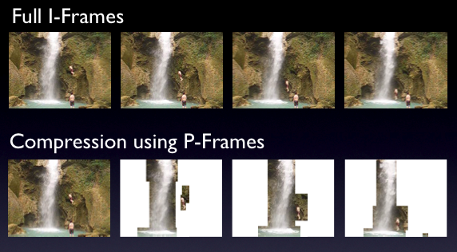
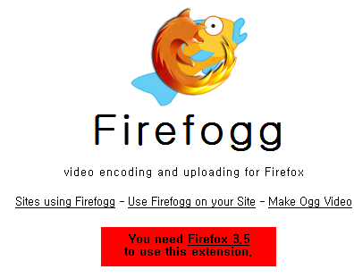

HTML5 Tutorial
- Video and Audio - 2017


A container is, essentially, a bundle of files. Usually a container consists of a video codec and an audio codec. Containers allow US to choose one codec for our video and one for our audio. It just gives us a bit more control over how we record our videos or rip our movies.
Many multimedia data streams contain both audio and video, and often some metadata that permit synchronization of audio and video. Each of these three streams may be handled by different programs, processes, or hardware; but for the multimedia data streams to be useful in stored or transmitted form, they must be encapsulated together in a container format.
Just like a ZIP file can contain any sort of file within it, video container formats only define how to store things within them, not what kinds of data are stored. By definition, a container format could wrap any kind of data. Most container formats are specialized for specific data requirements.
MP4
- Most commonly used video format.
- 4th standard produced by MPEG group.
- It can store most of any types of video data including H.264, metadata, chapters, DVD menus, and subtitles.
- It can also be easily streamed over the internet.
AVI
- Created by Microsoft in 1992.
- Doesn't allow for metadata, chapters, and subtitles.
MOV
- Owned by Apple's Quick Time department.
- Released in 1991.
- Starting from 2001, MOV and MP4 began using the same format specifications.
- Matroska (extension MKV)
Most of the video we come across is compressed, meaning its been altered to take up less space on our computer. We compress movies to make them more manageable, usually with some loss in video quality.
A codec compresses and decompresses data. It interprets the video file and determines how to play it on our screen.
Codec = (en)coder + decoder
Codec: implementations of media formats.
Whatever codec we choose, it will determine the video size, speed, and the quality.
Divx/Xvid
- Created by Divx Corp.
- Xvid is the Divx spelled backwards version, and it is freeware competitor.
- Good for compressing movies and for computer playback due to their good size/quality ratio.
- Generally being able to compress entire movie down to about 700Mbytes.
- Of the two, however, Xvid is more prefrerred not only because it's the only one of the two that can by used under the Unix environment but because it has slightly better quality.
FFmpeg
- It's the most widely used in Linux distributions.
- It's also compatible with Windows and Mac.
- It's mainly created as the culmination of free and open source encoding and decoding libraries that are out there. This makes it one-stop shopping for encoding and decoding pretty much any type of video.
- libavcodec - an audio/video codec library used by several other projects.
- libavformat - an audio/video container mux and demux library
- ffmpeg - command line program for transcoding multimedia files.
- For more on ffmpeg, please visit Video Streaming : FFmpeg.
x264
- x264 is a free software library for encoding video streams into the H.264/MPEG-4 AVC format.
- Preferred codec when it comes to streaming video due to its quality.
- x264 is not a codec (encoder/decoder), it is just an encoder (it cannot decode video).
- This is what YouTube videos are encoded in.
- As far as containers go, the MP4 container is generally known for being able to display x264 the best.
bitrate: how much data can be pressed in a second. Bitrate is the meamusre of video quality, and it is the quantity of the data needed to represent it.
- 256 Kbits/s - streaming video
- 1375 Kbits/s - video cd's
- 5 Mbits/s - DVD quality
- 10 Mbits/s - HDTV
- 40 Mbits/s - Bluray
Picture from wiki
H.264 streams include three types of frames:
I-frames: Intra-Frame, also known as key frames, I-frames are completely self-referential and don't use information from any other frames like a conventional static image file. These are the largest frames of the three, and the highest-quality, but the least efficient from a compression perspective while P‑frames and B‑frames hold only part of the image information, so they need less space to store than an I‑frame, and thus improve video compression rates.

P-frames: P-frames are predicted frames. P-frames holds only the changes in the image from the previous frame. For example, in a scene where a car moves across a stationary background, only the car's movements need to be encoded. The encoder does not need to store the unchanging background pixels in the P‑frame, thus saving space. P‑frames are also known as delta‑frames. When producing a P-frame, the encoder can look backwards to previous I or P-frames for redundant picture information. P-frames are more efficient than I-frames, but less efficient than B-frames.
B-frames: B-frames are bi-directional predicted frames. This means that when producing B-frames, the encoder can look both forwards and backwards for redundant picture information. This makes B-frames the most efficient frame of the three. In other words, B-Frame saves even more space by using differences between the current frame and both the preceding and following frames to specify its content. Note that B-frames are not available when producing using H.264's Baseline Profile.
B-Frame picture from Adobe.
HTML5 defines a standard way to embed video in a web page, using a <video> element. Support for the <video> element is still evolving and it doesn't work everywhere.
For maximum compatibility, here's what our video workflow looks like:
- Make one version that uses Theora video and Vorbis audio in an Ogg container.
- Make another version that uses WebM (VP8 + Vorbis).
- Make another version that uses H.264 baseline video and AAC (Advanced Audio Coding) low complexity audio in an MP4 container.
- Link to all three video files from a single <video> element, and fall back to a Flash-based video player.
There are the files that will do the video workflow. Original input is in Digital Video (DV) format, pond.dv, and converted to mp4 pond.mp4, ogv format pond.ogv, and webm format pond.webm. For the case when all of them are not working, we have shockwave format, movieB.swf.
Download video as MP4, WebM, or Ogg.
Video sharing sites such as YouTube has seen a huge explosion in the use of the web for multimedia streaming but the web was not built with such content in mind, and as a result, proprietary Flash Video (.flv) file format and the Adobe Flash platform have been dominating the web.
Virtually all the video we've ever watched on the web has been funneled through a third-party plugin such as QuickTime, maybe RealPlayer, or Flash. (YouTube uses Flash.) These plugins integrate with our browser well enough that we may not even be aware that we're using them. That is, until we try to watch a video on a platform that doesn't support that plugin.
HTML5, however, includes support for two new elements, <video> and <audio>, which allow Web developers to include multimedia content without relying on the user to have additional browser plug-ins installed. It's still in the very early stages and subject to format disruption, but sites like YouTube, Hulu, and Pandora could one day throw Flash away to bring us streaming audio and video. The majority of the API works in Firefox, Opera (experimental build), and Safari although Safari only uses Apple's proprietary .mov format, rather than the open-source Ogg formats supported by Firefox and Opera.
We may think of video files as AVI files or MP4 files. Actually, AVI and MP4 are just container formats. Just like a ZIP file can contain any sort of file within it, video container formats only define how to store things within them, not what kinds of data are stored. It's a little more complicated than that, however, because not all video streams are compatible with all container formats.
A video file usually contains multiple tracks, a video track without audio, plus one or more audio tracks without video. Tracks are usually interrelated. An audio track contains markers within it to help synchronize the audio with the video. Individual tracks can have metadata, such as the aspect ratio of a video track, or the language of an audio track. Containers can also have metadata, such as the title of the video itself, cover art for the video, episode numbers for television shows, and so on.
The main difference between different containers is not only the codecs they support but what other features they support—like subtitles or chapters.
There are lots of video container formats. Some of the most popular include
MPEG 4
With an .mp4 or .m4v extension. MPEG-4 is still a developing standard and is divided into a number of parts. Companies promoting MPEG-4 compatibility do not always clearly state which part level compatibility they are referring to. The key parts to be aware of are:
- MPEG-4 part 2 including Advanced Simple Profile (ASP)
Used by codecs such as DivX, Xvid, Nero Digital and 3ivx and by Quicktime 6. It was originally designed with video conferencing and other relatively primitive types of video. - MPEG-4 part 10 (MPEG-4 AVC/H.264 or Advanced Video Coding (AVC))
Used by the x264 encoder, by Nero Digital AVC, by Quicktime 7, and by high-definition video media like Blu-ray Disc. It was designed specifically with High Definition (HD) video for home theater applications in mind as one potential application. It also includes specifications for lower quality video for portable devices, allowing a single standard to be compatible across a wide variety of devices and applications.
- MPEG-4 part 2 including Advanced Simple Profile (ASP)
The MPEG 4 container is based on Apple's older QuickTime container (.mov). Movie trailers on Apple's website still use the older QuickTime container, but movies that we rent from iTunes are delivered in an MPEG 4 container.
Most of the features included in MPEG-4 are left to individual developers to decide whether to implement them. This means that there are probably no complete implementations of the entire MPEG-4 set of standards. To deal with this, the standard includes the concept of profiles and levels, allowing a specific set of capabilities to be defined in a manner appropriate for a subset of applications.
In other words, unlike MPEG-1 and MPEG-2, the MPEG-4's predecessors, MPEG-4 itself isn't just one unified encoding mechanism, but rather a group name for several flavors of video and audio encoding methods that share certain same characteristics. These "flavors" are often referred either as profiles and levels, in MPEG-4 compression scheme and each new profile should be backwards compliant to the older.
The most common MPEG-4 layers that XViD and DivX both use extensively are called simple profile and advanced simple profile. After those two standardized video encoding layers, MPEG-4 group has standardized several new layers -- most important ones are H.263+ (which is used widely in mobile phone's, dubbed as 3GP) and H.264 (often also called as AVC).
Note: As H.264 provides a significant improvement in capability beyond H.263, the H.263 standard is now considered a legacy design. Most new videoconferencing products now include H.264 as well as H.263 and H.261 capabilities.
Flash Video
With an .flv extension. Flash Video is, unsurprisingly, used by Adobe Flash. Prior to Flash 9.0.60.184 (a.k.a. Flash Player 9 Update 3), this was the only container format that Flash supported. More recent versions of Flash also support the MPEG 4 container.
Ogg
With an .ogv extension. Ogg is an open standard, open-source-friendly, and unencumbered by any known patents. Firefox 3.5, Chrome 4, and Opera 10.5 support - natively, without platform-specific plugins - the Ogg container format, Ogg video (called Theora), and Ogg audio (called Vorbis). On the desktop, Ogg is supported out-of-the-box by all major Linux distributions, and we can use it on Mac and Windows by installing the QuickTime components or DirectShow filters, respectively. It is also playable with the excellent VLC on all platforms.
WebM
A new container format. It is technically very similar to another format, called Matroska. WebM was announced at Google I/O 2010.
WebM combines the Ogg Vorbis audio codec with the VP8 video codec Google obtained through its February 2010 acquisition of On2 Technologies for $133.9 million. On2 has a long history in codecs: Its earlier VP3 technology formed the foundation of Ogg Theora, and its VP6 was widely used in video streaming on the Web by virtue of its inclusion in Adobe Systems' Flash Player. VP8 had only been under development until recently, but now Google has issued the specification for the technology, source code and a software developer kit to let programmers use it, and a collection of partners who endorsed it in varying degrees.
In contrast to how On2 handled its codecs and to how an industry group called MPEG LA licenses patents for using H.264, Google released WebM as a royalty-free technology. That means among other things that nobody will have to pay for using it and that open-source software projects can incorporate it directly.
It will be supported natively, without platform-specific plugins, in the next versions of Chromium, Google Chrome, Mozilla Firefox, and Opera. Adobe has also announced that the next version of Flash will support WebM video.
Audio Video Interleave
With an .avi extension. The AVI container format was invented by Microsoft in a simpler time, when the fact that computers could play video at all was considered pretty amazing. It does not officially support many of the features of more recent container formats. It does not officially support any sort of video metadata. It does not even officially support most of the modern video and audio codecs in use today. Over time, various companies have tried to extend it in generally incompatible ways to support this or that, and it is still the default container format for popular encoders such as MEncoder.
A codec is a computer program that can encode or decode video. Different codecs work for different types of video. Most of the videos we come across are compressed, meaning they have been altered to take up less space on our computer to make them more manageable, usually with some loss in video quality. A codec compresses and decompresses data. It interprets the video file and determines how to play it on our screen.
When we talk about watching a video, we're probably talking about a combination of one video stream and one audio stream. But we don't have two different files; we just have the video in an AVI file, or an MP4 file. These are just container formats, like a ZIP file that contains multiple kinds of files within it. The container format defines how to store the video and audio streams in a single file.
When we watch a video, our video player is doing several things at once:
- Interpreting the container format to find out which video and audio tracks are available, and how they are stored within the file so that it can find the data it needs to decode next.
- Decoding the video stream and displaying a series of images on the screen.
- Decoding the audio stream and sending the sound to our speakers.
A video codec is an algorithm by which a video stream is encoded. The word codec is a combination of the words coder and decoder. Our video player decodes the video stream according to the video codec, then displays a series of images, or frames, on the screen. Most modern video codecs use all sorts of tricks to minimize the amount of information required to display one frame after the next. For example, instead of storing each individual frame, they will only store the differences between frames. Most videos don't actually change all that much from one frame to the next, so this allows for high compression rates, which results in smaller file sizes.
Not clear what the codec is?
OK! let's put in this way.
Codec is technology to encode and decode video or audio data. They're used to convert the high-quality source material of a movie, for example, into compressed form that's more easily transmitted over the Internet or stored on a Blu-ray disc. Then they're used to convert that compressed data into something that people can watch or listen to again. The prevailing video codec today is called H.264, aka MPEG-4 AVC, and it is very popular for high definition videos. For audio, it's MP3. There are many others, however, including the AAC technology Apple uses for audio in iTunes and iPods, the Xiph.Org Foundation's Ogg Vorbis audio codec and Ogg Theora video codec. Codecs can run in hardware or software, but hardware acceleration is particularly useful when trying to decode video quickly enough to handle high-resolution displays or efficiently enough to preserve mobile-phone battery power.
There are tons of video codecs. The three most relevant codecs are H.264, Theora, and VP8.
H.264 is also known as MPEG-4 part 10 (MPEG-4 Advanced Video Coding (AVC)).
H.264 was also developed by the MPEG group and standardized in 2003. It aims to provide a single codec for low-bandwidth, low-CPU devices such as cell phones; high-bandwidth, high-CPU devices like modern desktop computers; and everything in between. To accomplish this, the H.264 standard is split into profiles, which each define a set of optional features that trade complexity for file size. Higher profiles use more optional features, offer better visual quality at smaller file sizes, take longer to encode, and require more CPU power to decode in real-time.
To give us a rough idea of the range of profiles, Apple's iPhone supports Baseline profile, the AppleTV set-top box supports Baseline and Main profiles, and Adobe Flash on a desktop PC supports Baseline, Main, and High profiles. YouTube now uses H.264 to encode high-definition videos, playable through Adobe Flash; YouTube also provides H.264-encoded video to mobile devices, including Apple's iPhone and phones running Google's Android mobile operating system. Also, H.264 is one of the video codecs mandated by the Blu-Ray specification; Blu-Ray discs that use it generally use the High profile.
Most non-PC devices that play H.264 video including iPhones and standalone Blu-Ray players actually do the decoding on a dedicated chip, since their main CPUs are nowhere near powerful enough to decode the video in real-time. Many desktop graphics cards also support decoding H.264 in hardware. There are a number of competing H.264 encoders, including the open source x264 library. The H.264 standard is patent-encumbered; licensing is brokered through the MPEG LA group. H.264 video can be embedded in most popular container formats, including MP4 which is used primarily by Apple's iTunes Store and MKV which is used primarily by non-commercial video enthusiasts.
Theora evolved from the VP3 codec and has subsequently been developed by the Xiph.org Foundation. Theora is a royalty-free codec and is not encumbered by any known patents other than the original VP3 patents, which have been licensed royalty-free. Although the standard has been frozen since 2004, the Theora project which includes an open source reference encoder and decoder only released version 1.0 in November 2008 and version 1.1 in September 2009.
Theora video can be embedded in any container format, although it is most often seen in an Ogg container. All major Linux distributions support Theora out-of-the-box, and Mozilla Firefox 3.5 includes native support for Theora video in an Ogg container. And by native, I mean available on all platforms without platform-specific plugins. We can also play Theora video on Windows or on Mac OS X after installing Xiph.org's open source decoder software.
VP8 is another video codec from On2, the same company that originally developed VP3 (later Theora). Technically, it is similar in quality to H.264 Baseline, with lots of potential for future improvements.
In 2010, Google acquired On2 and published the video codec specification and a sample encoder and decoder as open source. As part of this, Google also opened all the patents that On2 had filed on VP8, by licensing them royalty-free. This is the best we can hope for with patents. We can't actually release them or nullify them once they've been issued. To make them open-source friendly, we license them royalty-free, and then anyone can use the technologies the patents cover without paying anything or negotiating patent licenses. As of May 19, 2010, VP8 is a royalty-free, modern codec and is not encumbered by any known patents, other than the patents that On2 (now Google) has already licensed royalty-free. .
MPEG LA won't go after Google's open video codec VP8.- GigaOM Mar 7, 2013
"This is a breakthrough for VP8, and could have implications for both video services and real-time communication.
Google has struck a licensing deal with media codec patents licensing company MPEG LA that clears the path for a wider adoption of Google's open VP8 video codec and its WebM video format. The deal means that MPEG LA will abandon its efforts to form a patent pool and go after Google and other users of VP8 and previous-generation video codecs owned by Google. It also clears the path for the development of VP9, which is currently underway at Google."
"There is no word on the financial details of the deal, but one can assume that Google paid enough to get on MPEG LA's good side and license patents from 11 companies that could be essential to VP8. It's worth pointing ou that Google will be able to continue to freely relicense VP8, meaning that MPEG LA doesn't have a claims against anyone using the codec."
Google+ Hangouts goes HD as it switches from H.264 to VP8. Next up, WebRTC.- GigaOM Aug28, 2013
Noticed any differences when using Google’s Hangouts video chat lately? If we did, then we may be one of the lucky users who has already received an upgrade to 720p HD video. The company quietly started to roll out HD for Hangouts to a subset of its users in the last few weeks and hopes to complete the rollout soon. But the change isn’t just a quality upgrade – it’s part of a bigger move towards open standards that will eventually bring us video chat in the browser without the need for any plugins.
But the move to VP8 isn’t just about looks. It’s also a first step towards letting users video chat in the browser without the need for any plugins, thanks to an emerging standard for real-time audio and video communication called WebRTC. Google has been a big proponent of WebRTC, and integrated it into the desktop and Android versions of its Chrome browser.
...The company hinted at plans to utilize WebRTC for Hangouts when it launched the video chat platform two years ago. So what took Google so long? Chew told me that the Hangouts team first concentrated on optimizing the experience for end users, and that the standard had to mature. But there were also less obvious problems that have so far prevented Google from fully embracing WebRTC for Hangouts. Yes, we are talking about birthday hats, scuba glasses and cat whiskers.
...From top-left, clockwise: VP9 (experimental), VP8, H.265/HEVC, x264. spline upscaled to 1080p.
In general, an audio sample is a single output value from an A/D converter, i.e., a small integer number (usually 8 or 16 bits), and audio data is just a series of such samples. It can be characterized by three parameters:
- the sampling rate (measured in samples per second or Hz, e.g., 44100)
- the number of bits per sample (e.g., 8 or 16) (not to be confused with bit rate, which means number of bits per second), which determine the quality of the representation
- the number of channels (1 for mono, 2 for stereo, etc.)
Waveform of spoken sequence "I am prepared", encoded with LPCM (linear pulse-code modulation)-coding, visualized using Octave, with sample rate of 44100 and 16-bit sample size. - picture from http://is.muni.cz/th/359231/fi_b/thesis.pdf
There are several formats for representing such data. But the two most popular ones are:
- linear encoding
- mu-law encoding
Audio codecs are algorithms by which an audio stream is encoded. Like video codecs, there are lossy and lossless audio codecs. And like lossless video, lossless audio is really too big to put on the web. So we'll concentrate on lossy audio codecs.
Actually, it's even narrower than that, because there are different categories of lossy audio codecs. Audio is used in many places where video is not, telephony, for example, and there is an entire category of audio codecs optimized for encoding speech. We wouldn't rip a music CD with these codecs, because the result would sound like a 4-year-old singing into a speakerphone. But we would use them in an Asterisk PBX, because bandwidth is precious, and these codecs can compress human speech into a fraction of the size of general-purpose codecs. However, due to lack of support in both native browsers and third-party plugins, speech-optimized audio codecs never really took off on the web. So we'll concentrate on general purpose lossy audio codecs.
As I mentioned in earlier, when we watch a video, our computer is doing several things at once:
- Interpreting the container format Decoding the video stream
- Decoding the audio stream and sending the sound to our speakers
The audio codec specifies how to do #2, decoding the audio stream and turning it into digital waveforms that our speakers then turn into sound. As with video codecs, there are all sorts of tricks to minimize the amount of information stored in the audio stream. And since we're talking about lossy audio codecs, information is being lost during the recording - encoding - decoding - listening lifecycle. Different audio codecs throw away different things, but they all have the same purpose: to trick our ears into not noticing the parts that are missing.
One concept that audio has that video does not is channels. We're sending sound to our speakers, right? Well, how many speakers do we have? If we're sitting at our computer, we may only have two: one on the left and one on the right. So-called surround sound systems can have six or more speakers, strategically placed around the room. Each speaker is fed a particular channel of the original recording. The theory is that we can sit in the middle of the six speakers, literally surrounded by six separate channels of sound, and our brain synthesizes them and feels like we're in the middle of the action.
Most general-purpose audio codecs can handle two channels of sound. During recording, the sound is split into left and right channels; during encoding, both channels are stored in the same audio stream; during decoding, both channels are decoded and each is sent to the appropriate speaker. Some audio codecs can handle more than two channels, and they keep track of which channel is which and so our player can send the right sound to the right speaker.
There are lots of audio codecs. But on the web, there are really only three we need to know about: MP3, AAC, and Vorbis.
MPEG-1 Audio Layer 3 is colloquially known as MP3. MP3s can contain up to 2 channels of sound. They can be encoded at different bitrates: 64 kbps, 128 kbps, 192 kbps, and a variety of others from 32 to 320. Higher bitrates mean larger file sizes and better quality audio, although the ratio of audio quality to bitrate is not linear. (128 kbps sounds more than twice as good as 64 kbps, but 256 kbps doesn't sound twice as good as 128 kbps.) Furthermore, the MP3 format allows for variable bitrate encoding, which means that some parts of the encoded stream are compressed more than others. For example, silence between notes can be encoded at a very low bitrate, then the bitrate can spike up a moment later when multiple instruments start playing a complex chord. MP3s can also be encoded with a constant bitrate, which, unsurprisingly, is called constant bitrate encoding.
The MP3 standard doesn't define exactly how to encode MP3s although it does define exactly how to decode them; different encoders use different psychoacoustic models that produce wildly different results, but are all decodable by the same players. The open source LAME project is the best free encoder, and arguably the best encoder period for all but the lowest bitrates.
The MP3 format was standardized in 1991 and is patent-encumbered, which explains why Linux sucks can't play MP3 files out of the box. Pretty much every portable music player supports standalone MP3 files, and MP3 audio streams can be embedded in any video container. Adobe Flash can play both standalone MP3 files and MP3 audio streams within an MP4 video container.
Advanced Audio Coding is affectionately known as AAC. Standardized in 1997, it lurched into prominence when Apple chose it as their default format for the iTunes Store. Originally, all AAC files bought from the iTunes Store were encrypted with Apple's proprietary DRM scheme, called FairPlay. Many songs in the iTunes Store are now available as unprotected AAC files, which Apple calls iTunes Plus. The AAC format is patent-encumbered; licensing rates are available online.
AAC was designed to provide better sound quality than MP3 at the same bitrate, and it can encode audio at any bitrate. (MP3 is limited to a fixed number of bitrates, with an upper bound of 320 kbps.) AAC can encode up to 48 channels of sound, although in practice no one does that. The AAC format also differs from MP3 in defining multiple profiles, in much the same way as H.264, and for the same reasons. The low-complexity profile is designed to be playable in real-time on devices with limited CPU power, while higher profiles offer better sound quality at the same bitrate at the expense of slower encoding and decoding.
All current Apple products, including iPods, AppleTV, and QuickTime support certain profiles of AAC in standalone audio files and in audio streams in an MP4 video container. Adobe Flash supports all profiles of AAC in MP4, as do the open source mplayer and VLC video players. For encoding, the FAAC library is the open source option; support for it is a compile-time option in mencoder and ffmpeg.
The Adaptive Multi-Rate (AMR or AMR-NB) audio codec is a patented audio data compression scheme optimized for speech coding. AMR speech codec consists of a multi-rate narrowband speech codec, that encodes narrowband (200–3400 Hz) signals at variable bit rates ranging from 4.75 to 12.2 kbit/s with toll quality speech starting at 7.4 kbit/s.
Vorbis is often called Ogg Vorbis, although this is technically incorrect. Ogg is just a container format, and Vorbis audio streams can be embedded in other containers. Vorbis is not encumbered by any known patents and is therefore supported out-of-the-box by all major Linux distributions and by portable devices running the open source Rockbox firmware. Mozilla Firefox 3.5 supports Vorbis audio files in an Ogg container, or Ogg videos with a Vorbis audio track. Android mobile phones can also play standalone Vorbis audio files. Vorbis audio streams are usually embedded in an Ogg or WebM container, but they can also be embedded in an MP4 or MKV container or, with some hacking, in AVI. Vorbis supports an arbitrary number of sound channels.
There are open source Vorbis encoders and decoders, including OggConvert (encoder), ffmpeg (decoder), aoTuV (encoder), and libvorbis (decoder). There are also QuickTime components for Mac OS X and DirectShow filters for Windows.
Comparison of built-in signal processing functionality SPT - Signal Processing Toolbox, Symbolic - Symbolic Toolbox signal - signal package. - data from http://is.muni.cz/th/359231/fi_b/thesis.pdf
In this section, we're going to use Ogg video as a shorthand for "Theora video and Vorbis audio in an Ogg container." This is the combination of codecs+container that works natively in Mozilla Firefox and Google Chrome.
FireFogg is an open source, GPL-licensed Firefox extension for encoding Ogg video. To use it, we'll need to install Mozilla Firefox 3.5 or later, then visit firefogg.org
If we haven't installed, we need to do it. After the installation, click Make Ogg Video.
Click "Select file" and when new page prompts, put our file and choose "Basic quality..."
Set each items as in the picture and click "Save Ogg" button. And that's it for Ogg.
In this section, we're going to use H.264 video as a shorthand for H.264 baseline profile video and AAC low-complexity profile audio in an MPEG-4 container." This is the combination of codecs+container that works natively in Safari, in Adobe Flash, on the iPhone, and on Google Android devices.
The easiest way to encode H.264 video is HandBrake. HandBrake is an open source, GPL-licensed application for encoding H.264 video. Pre-built binaries are available for Windows, Mac OS X, and modern Linux distributions.
HandBrake comes in two flavors: graphical and command-line. We'll walk through the graphical interface first, then we'll see how my recommended settings translate into the command-line version.
After we open the HandBrake application, the first thing to do is select our source video. Click the "Source" dropdown button and choose "Video File" to select a file. HandBrake can take virtually any video file as input, including DV video produced by many consumer-level camcorders.
WebM is a video format offer an alternative to commercial Formats such as h264, MPEG4 and MPEG2, that are patented and require a commercial license. The project's development is sponsored by Google.
WebM is based on two open codecs for compressing the video and audio component of the content:- VP8 developed by On2 for video codec
The video content of a WebM file is compressed with VP8, a technology developed by ON2, which was recently acquired by Google, who then went on to make VP8 an open and free technology. VP8 is considered to be one of the few standards that can keep up with the modern MPEG4 compression standards both in quality and file size. - Vorbis for Audio codec
Of course also the Audio-Component of a Video-File needs to be compressed, therefore another open technology is used: Vorbis (also known as Ogg Vorbis), a free open source software for lossy audio-compression, and therefore an alternative to MP3.
There are several Encoding Tools:
- Sorenson Squish (Web based)
Sorenson Media is one of the first companies to offer a WebM compression Tool, Squish - Wildform Flix (Win)
Wildform is one of the first to offer a free downloadable encoder fro WebM,
Flix - Miro Video Converter (Win + Mac)
A free tool to encode various Video Formats including WebM/VP8, Miro - ffmpeg (Linux)
A command line tool by Google, ffmpeg
Ph.D. / Golden Gate Ave, San Francisco / Seoul National Univ / Carnegie Mellon / UC Berkeley / DevOps / Deep Learning / Visualization